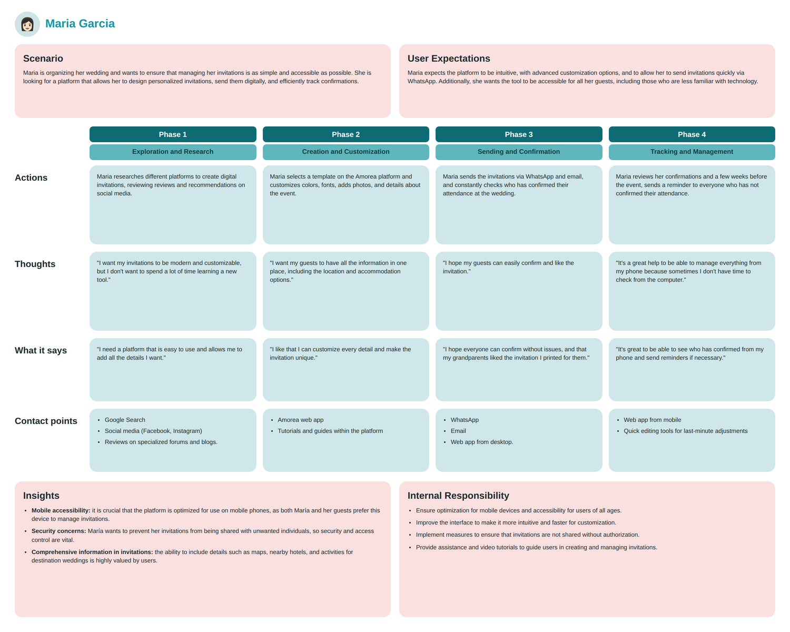
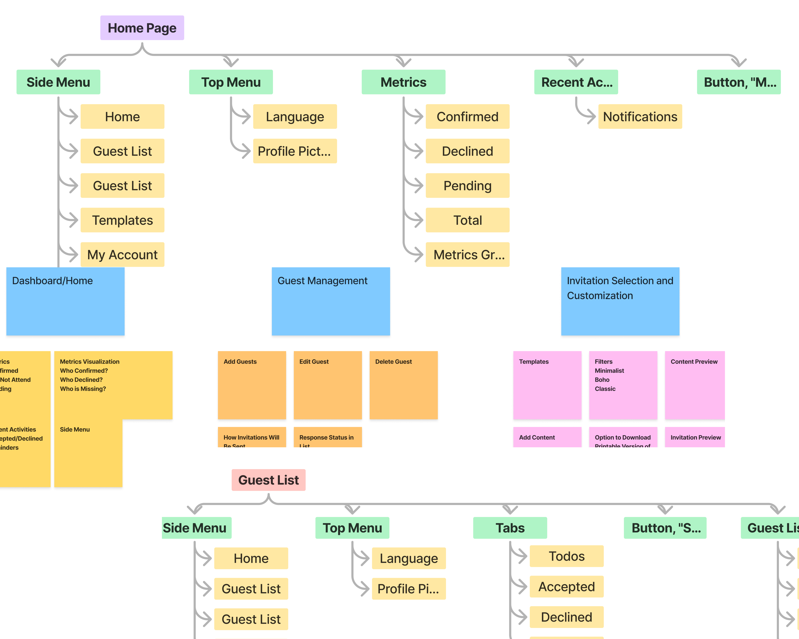
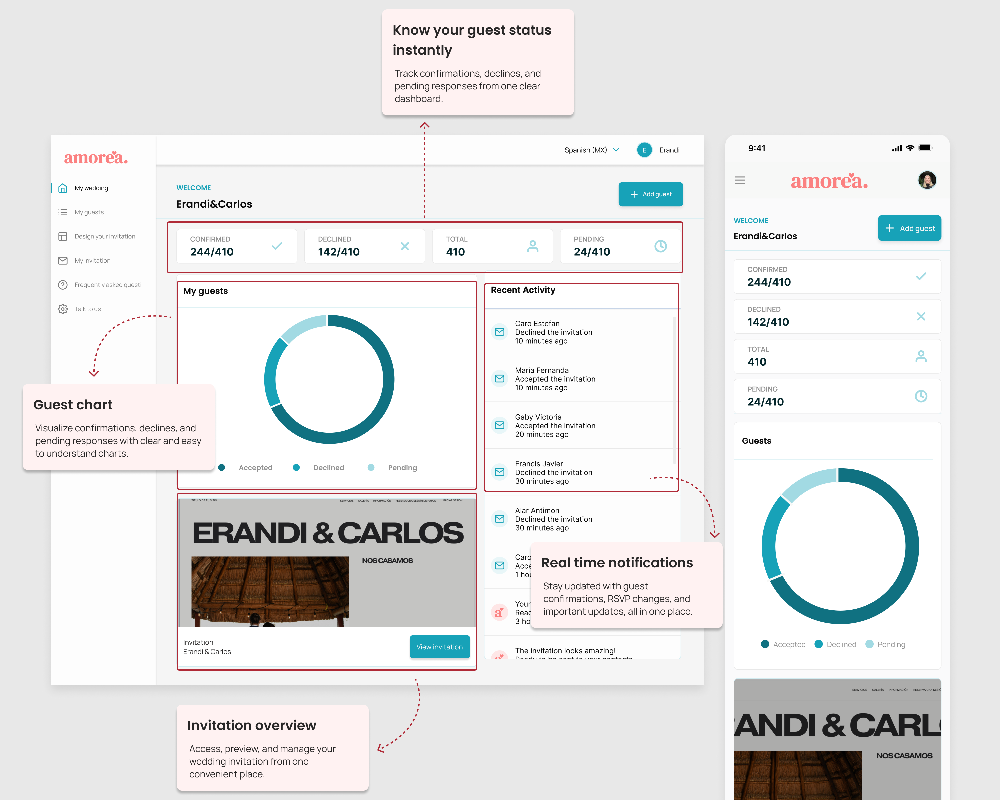
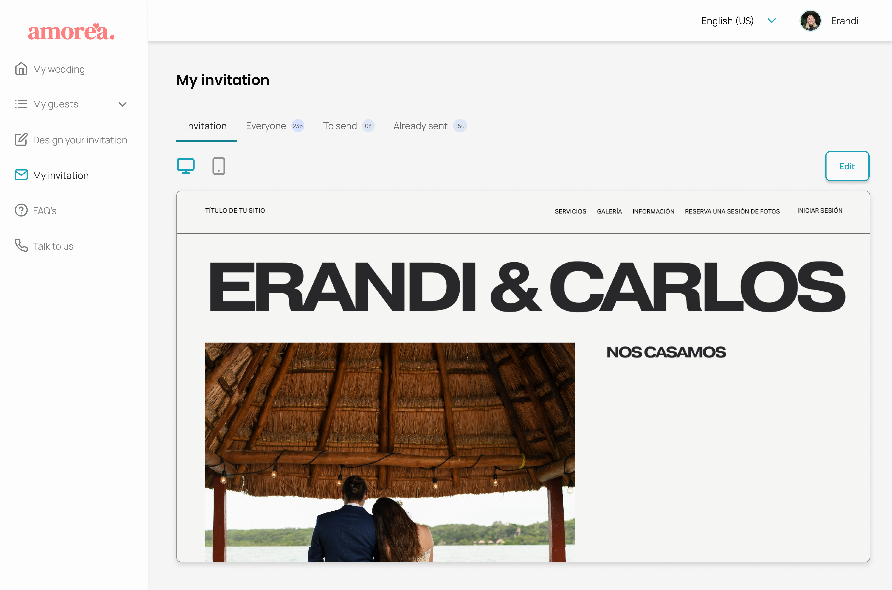

The obvious product was beautiful invitations. The real opportunity was knowing who's coming.
When I started, the obvious product was "make beautiful digital invitations." Research kept pulling me somewhere else.
Couples weren't stressed about how invitations looked, they were stressed about not knowing who was actually coming. Responses were scattered across texts, calls, and emails, with no single source of truth. Every couple I looked at was running the same manual reconciliation in their head, over and over, with no way to trust the number they landed on.
So I made a deliberate call: invitation creation would be a feature, but guest management would be the core of the product. Every later decision, the dashboard, real time RSVP states, the information architecture, flowed from that one reframe.
Research first, then structure, then screens
I ran user research to understand how couples actually plan, then synthesized it into personas and a journey map to locate the sharpest pain points. Before touching UI, I mapped the full site structure so navigation reflected how couples think about their event, not how the data happens to be organized.


Designing around one question: who's coming?
-
—
Guest management as the core, not invitations. Focused the product on the real source of stress, not the more visually obvious feature.
-
—
A dashboard that answers one question instantly: who's coming? Confirmed, declined, and pending surfaced at a glance, with no manual tallying required.
-
—
Real time RSVP tracking. The picture is always current, no refreshing a spreadsheet, no asking "did you hear back from them?"
-
—
Responsive by default. Designed to work as well on a phone the night before the wedding as on a laptop months ahead.

70+ components, zero duplication
I built Amorea's design system early, not as cleanup at the end. Components are reusable, responsive, and structured to map cleanly onto React, variants, states, and consistent patterns, so the same building blocks hold up as the product grows and implementation stays efficient. No duplicated components, no one off screens.

Couples don't want to log in just to ask "who's still coming?"
They want a quick answer on the phone that's already in their hand. So I extended Amorea with a WhatsApp assistant: a read only conversational layer that surfaces RSVP status, pending guests, reminders, and the wedding countdown through chat, then hands off to the dashboard for anything that changes data.
This wasn't a bolt on feature. It's a direct extension of Amorea's core insight: the real problem was never the invitation, it was visibility into who's coming. The assistant makes that visibility ambient.
The hardest part of conversational design isn't the UI, it's defining how the assistant thinks. I authored a full system prompt that specifies its identity, scope, tone, data access, and action authority.
Core interaction rules
-
—
A strict scope boundary. The assistant helps with guest management and nothing else. It won't discuss venues, vendors, or budgets, and it says so warmly instead of dead ending. Defining what a product refuses to do is as important as what it does.
-
—
A read only model with a clear handoff. The assistant can read and summarize, but every action that changes data, sending a reminder, editing a guest, resending an invitation, routes to the dashboard. I formalized this as an action authority matrix.
-
—
A defined voice with hard rules. Warm but not a cheerleader, elegant but casual for the channel. Exclamation marks reserved for genuine milestones. No dashes as connectors, because they make a message read as machine generated.
Action authority matrix
| Request type | Where it resolves |
|---|---|
| Check RSVP status | Complete in chat |
| Send a reminder | Initiate in chat, finish in app |
| Edit guest details | Never executes, always redirects |
| Discuss venue or budget | Out of scope, acknowledged warmly, redirected |

Designed limits, not just designed features
The assistant is honest about its limits, and the design turns those limits into a feature. When a couple asks for something it can't do in chat, it acknowledges the request, explains what it can do, and offers the relevant dashboard link.
The five interaction patterns map this end to end: the happy path that informs and closes, the proactive nudge with conditional reminder logic, the out of scope repair, the conversation to UI bridge where the channel handoff begins, and the connected state with an easy exit.


One place to see the whole guest list clearly
Amorea gives couples one place to manage guests, track responses as they come in, and see their attendance picture clearly, replacing scattered messages and mental math with a calm, organized view.
Good product design is as much about narrowing focus as adding features
The strongest design move on this project wasn't a screen, it was deciding what not to build. Letting research override the obvious "pretty invitations" framing, and committing to guest management as the core, made the whole product clearer.
It reminded me that balancing usability, emotional context, and technical scalability is what turns a nice idea into something real.
Selected screens

